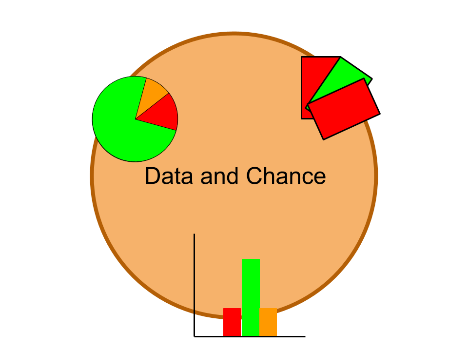
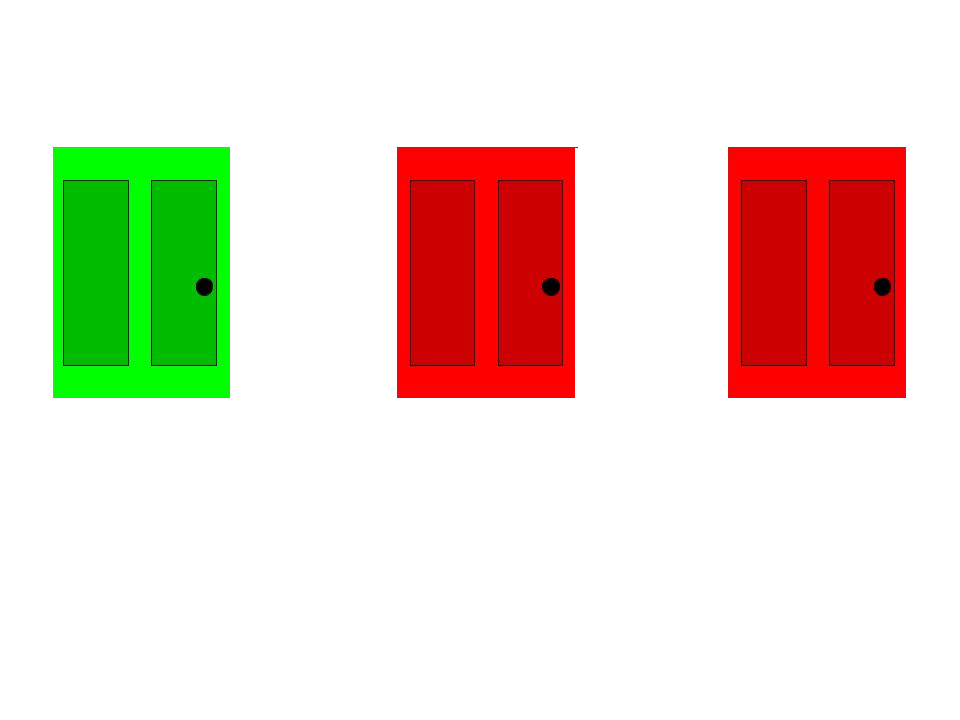

Mathematics is used in many ways. Applied math is used in daily life, and, as the name suggests, is applied. Number theory is used to prove applied math and bring it to the world. However, to me, number theory is also applied math, because it is the foundation of applied math.
Mathematics is used in many ways. Applied math is used in daily life, and, as the name suggests, is applied. Number theory is used to prove applied math and bring it to the world. However, to me, number theory is also applied math, because it is the foundation of applied math.
Two years ago, I took the SSAT to get into Nueva, and that was when I started my interest in math. At first, the reason I took math after the SSAT was for one reason: so I could get into Nueva next year. However, learning math was something that I was very interested about, and taking the SSAT showed me where my love of learning would take me.
 My real experience in math started no more than a year ago when I enrolled in a CTY summer camp. Before that, I had been taking RSM, a school for people like me who like math. To get into CTY, I had to first take the SCAT. This experience reminded me of taking the SSAT a year before, and that helped me push through to the end. All the practice and work that I had been putting in was being put to the test. In the end, I had made it, and I felt stronger. During the CTY course, I learned many techniques. I learned to calculate permutations and calculations, I learned how to manipulate statistics to show what I want people to see, and I learned how to determine biased samples. In the beginning, I had challenges doing these tasks, because I had no background knowledge on the topic. However, as time went on, I gradually began to catch up with the rest of my classmates.  Near the end of the program, we learned about the Monty Hall game. Using statistics, we figured out how to get the correct card almost every time. Here is how we solved it. In the beginning, there is a ⅔ chance that you will will pick the wrong card and a ⅓ chance that you will pick the right card. Because of this, the card that you originally picked is more likely to be an incorrect one. When an incorrect card is revealed, there is still a ⅔ chance that the card that you chose is incorrect, so switching would be better. I used this to trick my friends and show them that I could get the correct card every time.
I enjoy math because when I am faced with a problem, I am able to sit down and think about it, instead of asking for help every time. I enjoy feeling the pressure, and when I solve the problem, I am able to let go of that pressure. When I get the problem wrong, I am able to look back, see what I got wrong, and fix it. Sometimes, when I think I come close to an answer, I relax too much, and I make mistakes that I can only make by rushing. Some goals that I have to improve my math are to slow down, think, and write down all my thoughts. I need to improve in these because by slowing down, I can think better, and if I think better, I can work faster. I should write down my thoughts because if I don't write down my thoughts, I could lose track of what I am doing.